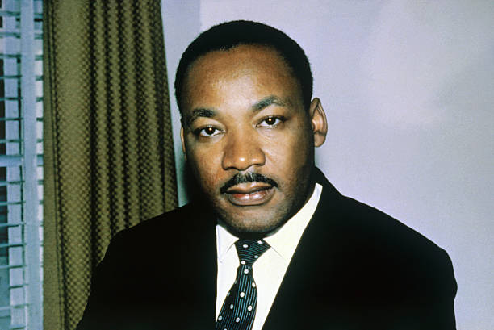
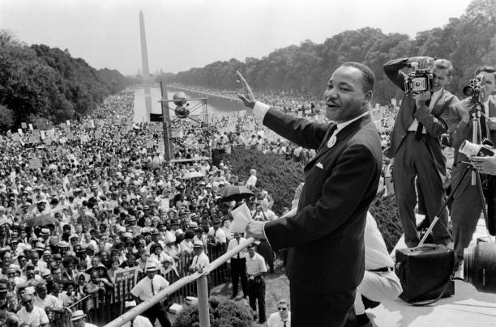
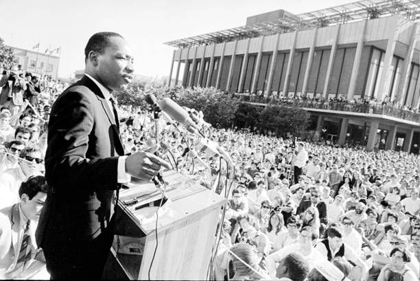
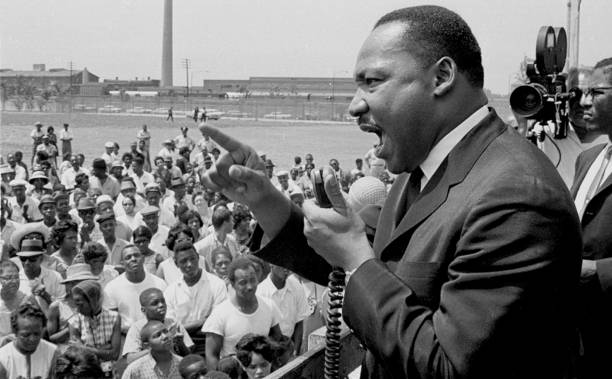
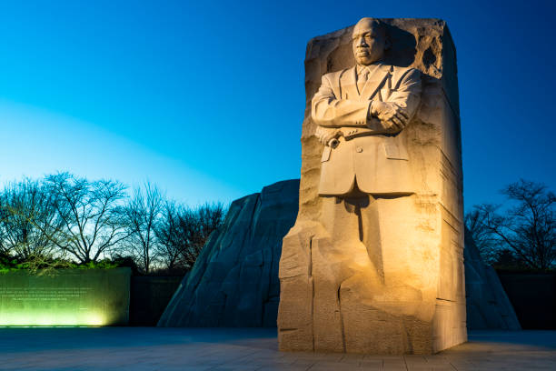

Vamos aprender um pouco...

História
Martin Luther King Jr. nasceu em Atlanta, Geórgia, em 15 de janeiro de 1929 e desde pequeno aprendeu a valorizar a dignidade das pessoas e a lutar pela justiça, esses valores moldaram sua trajetória e o tornaram uma figura central no movimento pelos direitos civis nos Estados Unidos. Não era apenas um líder, mas um verdadeiro sonhador que, em seu famoso discurso "Eu Tenho um Sonho", proferido durante a Marcha sobre Washington em 1963, compartilhou uma visão de um futuro onde as pessoas seriam julgadas pelo que são e não pela cor da pele, esse discurso tocou o coração de muitos e se tornou um símbolo da luta por igualdade. Acreditava firmemente na não-violência, mesmo diante de grandes opressões, sempre escolheu o caminho da paz e sua coragem fez dele um símbolo de esperança, não se limitou a organizar protestos, mas conectou-se com as pessoas, ouviu suas histórias e compartilhou suas lutas. Além de lutar contra a segregação racial, também se preocupava com a pobreza e a guerra, compreendia que a busca por direitos civis estava ligada à luta por justiça econômica e, nos últimos anos de sua vida, começou a falar sobre a necessidade de mudanças mais amplas, como acabar com a pobreza e se opor à Guerra do Vietnã, sonhando com um mundo onde todos pudessem viver com dignidade. Infelizmente, sua vida foi interrompida em 4 de abril de 1968, quando foi assassinado em Memphis, Tennessee, mas seu legado continua vivo e o Dia de Martin Luther King Jr. é uma oportunidade para refletir sobre seus ensinamentos e lembrar que, mesmo em tempos difíceis, a esperança e a determinação podem levar a mudanças significativas. A história desse grande líder nos lembra que todos podemos fazer a diferença e que, independentemente dos desafios enfrentados, é fundamental lutar pelo que é certo e acreditar em um futuro melhor.
Citações
"A injustiça em qualquer lugar é uma ameaça à justiça em todo lugar."
Imagens



